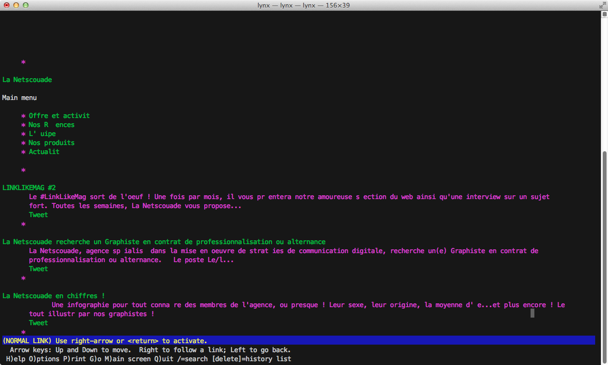

Le web de demain
Back to 1989 !

1989 - HTML 1
1995 - HTML 2


1997 - HTML 3 et 4
www.microsoft.com

www.apple.com

www.cocacola.com
la balise TABLE !
| Donnée | Valeur |
| Netscouadiens | 48 |
| Moyenne d'age | 29 ans |

les balises BLINK et MARQUEE !
1998 - CSS 2
Pour séparer mise en forme et contenu on a créé les feuilles de style !
1999 - Flash 4
En 1999, Macromedia sort Flash 4 et enregistre 100 millions d’installations du Flash Player, désormais inclus à Microsoft Internet Explorer 5

2005 - Le retour de javascript

Ajax

jQuery

2002/2010 - XHTML
Et maintenant ?

HTML 5 APIs
- Hors connexion & Stockage
- Audio/Vidéo
- 3D/Graphismes/Animations
- Svg
- Canvas
- WebGl
- CSS3 Animations / Transition